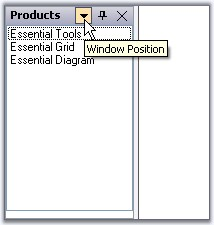
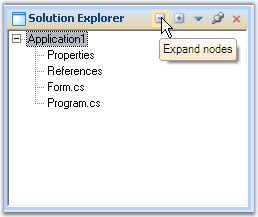
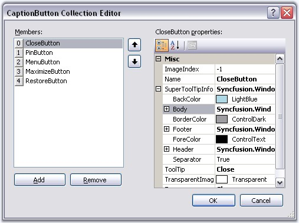

By default, tooltips will be displayed for the caption buttons in a docked control when the mouse is moved over it.

Figure 66: Default Tooltip for Menu Button
 Note: EnableSuperTooltip property which is
discussed below, should be set to false to effect the above default
tooltip.
Note: EnableSuperTooltip property which is
discussed below, should be set to false to effect the above default
tooltip.
SuperTooltip Support
Docking manager can display a super tooltip by enabling the DockingManager.EnableSuperTooltip property. For this a SuperTooltip control should be dragged and dropped on to the form and it should be selected in the DockingManager.SuperTooltip property.
|
DockingManager Property |
Description |
|
EnableSuperTooltip |
Gets/Sets whether to enable SuperToolTip using the dock caption buttons. |
|
SuperToolTip |
Indicates the SuperToolTip associated with the docking manager. |
A SuperToolip can be added to the docking manager programmatically using the below code snippet.
|
[C#]
this.dockingManager1.EnableSuperToolTip = true; this.dockingManager1.SuperToolTip = this.superToolTip1; |
|
[VB.NET]
Me.dockingManager1.EnableSuperToolTip = True Me.dockingManager1.SuperToolTip = Me.superToolTip1 |

Figure 67: SuperToolTip added to the Docking Manager
Text for the supertooltip and other customizing options can be specified for a particular button by using the CaptionButton Collection Editor.

Figure 68: SuperToolTip customized by using the CaptionButton Collection Editor